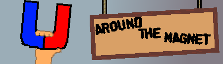

Game List
Where is my Pointer?

Translation File
Mafia

Translation File (not avaliable at this moment...)
Around The Magnet

Manual Savestates!
Scared of losing progress? Don't worry! Now you can save and load a progress file to your device.
PC VERSION
MOBILE VERSION
WARNING!
CHANGES FOR MOBILE VERSION (spoilers, if you haven't played the game):
- To finish a level, you have to double-tap on green area
- Camera will move only, when you tap on a specific screen edge (f.e.: moving camera upward requieres holding finger on top of your screen)
- Change for Ending Section (watch carefully ☺)